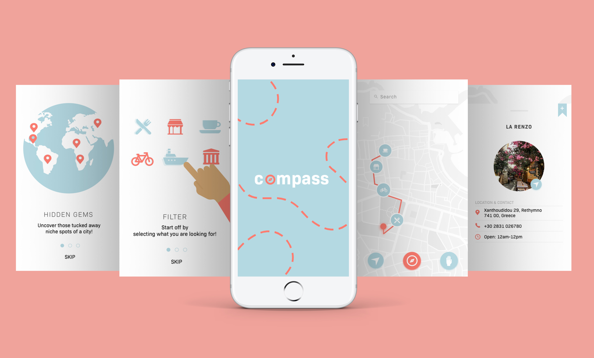
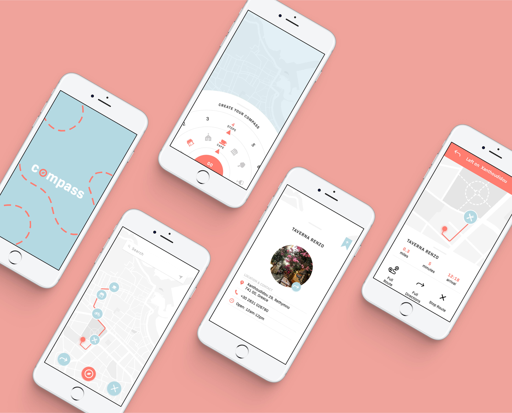

Project Overview: Compass is an app that can help individuals discover a city’s hidden gems. The app generates user routes based on the user's location and the selections the user specifies. These routes consist of local favorites, niche spots, and other places that may be under the radar.
Roles: User Testing, Wireframing, Prototyping, Branding, UI/UX
If interested in reading more, I documented my process through a Tumblr blog.
Compass App



Compass is an app that can help individuals discover a city’s hidden gems.
The idea for this project grew from traveling experiences. Some questions that came to mind were
‘What is near me?’ or ‘What am I missing out on?’. As I spoke to different people,
I discovered that individuals want to experience the local life. Although
touristy spots are a top on the list for most travelers, it seems that individuals
also want to discover those special places that may be overlooked.
I started brainstorming ideas in which I could help individuals discover those hidden spots. My approach was to create the idea of user routes.
I started brainstorming ideas in which I could help individuals discover those hidden spots. My approach was to create the idea of user routes.
Research Phase
I spent time researching the topic travel. I focused my research on
a couple of topics including the pain points of traveling, mobile
influence when it comes to travel decisions, and the rise of online
searches. I gathered information from article readings and other platforms.
The desk research allowed me to better understand my target audience.
At this stage, I also conducted a couple of interviews. One of those interviews was conducted in Spanish. I received valuable input, thoughts, and statements. The interviews helped me better understand the struggles that travelers face when traveling.
At this stage, I also conducted a couple of interviews. One of those interviews was conducted in Spanish. I received valuable input, thoughts, and statements. The interviews helped me better understand the struggles that travelers face when traveling.
Getting Ideas on paper
The prototype phase kicked off with paper sketches. I presented a total of 5 polarizing
concepts to users. Each prototype received insights and reactions.
I was able to identify which ideas were most compelling to users.
Series of Prototypes
I began building digital versions of my paper prototypes. I did a couple of lo-fi/mid-fi prototypes to test with users. I was
able to see which prototypes
were most successful and which features of each prototype stood out the most to users.
The screens on the far right, are a hybrid of the beginning rounds of prototypes.
In the end, these prototypes meshed into one solidified idea.
It is important to highlight that the heart of the product is the user creating a customized route. During this phase, I designed and tested different UI approaches for the categories section. For the hi-fi prototype, I pursued a experimental rounded navigation for users to swipe through the categories.
It is important to highlight that the heart of the product is the user creating a customized route. During this phase, I designed and tested different UI approaches for the categories section. For the hi-fi prototype, I pursued a experimental rounded navigation for users to swipe through the categories.
The User Journey
The sitemap highlights they key user journey of the product. Once
the user lands on the map, the user is able to activate the compass.
After the compass expands, the user can make their category
selections to generate their route.
Final Phase

Above, are a couple of the final screens of the compass app.
The demo walks through the main flow of the product. It showcases how the navigation
would function and how users would be able to interact with it.